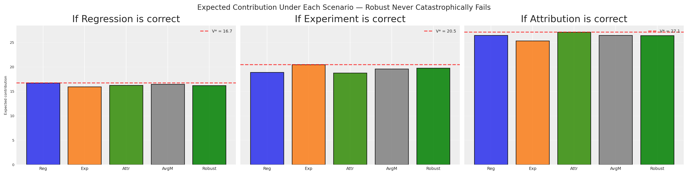

import warnings
warnings.filterwarnings("ignore")
# Domain-specific / PyMC ecosystem
from pymc_marketing.mmm.budget_optimizer import BudgetOptimizer, CustomModelWrapper
import pymc as pm
import arviz as az
import preliz as pz
# Visualization
import matplotlib.pyplot as plt
import seaborn as sns
# Scientific computing
import numpy as np
import pandas as pd
# Optimisation
from scipy.optimize import minimize as scipy_minimizeDecision-Making Under Contradictions: Robust Budget Allocation When Your Models Disagree
MMM
python
decision theory
optimization
bayesian
pymc
marketing
robust optimization
Introduction
You’re sitting in the quarterly business review. Finance asks a deceptively simple question: “Should we increase or decrease search spend next quarter?”
You look at your three measurement systems. The regression model says search is a star — high incremental return, pour more money in. The experiment team says social outperformed search by 3x during last month’s geo-test. Meanwhile, the attribution dashboard reports that search drives more contacts per dollar than any other channel.
Three teams. Three methodologies. Three contradictory numbers.
Finance doesn’t care about your methodological nuance. They need one decision. Increase or decrease? By how much? Across which channels?
This is the reality of modern marketing measurement. We don’t have one source of truth — we have multiple, competing views of how marketing works. Each view captures something real, but none tells the whole story. And the worst thing you can do is pretend this disagreement doesn’t exist.
How do you make a single, defensible budget decision when your models fundamentally disagree?
Today we’ll answer that question. We’ll borrow a powerful idea from decision theory and robust optimization — minimax regret — and show how to find budget allocations that are robust to model error, regardless of which view turns out to be correct.
Quick summary
This article walks you through:
- Building three competing models of marketing effectiveness, each representing a different measurement philosophy (regression, experimentation, attribution).
- Showing that these models produce contradictory budget recommendations when optimised individually.
- Demonstrating why averaging or picking the most certain model are flawed strategies — including a dimensional analysis argument.
- Introducing minimax regret from classical decision theory as the principled resolution.
- Computing the regret matrix and finding the robust allocation that minimizes worst-case regret.
- Connecting everything back to the PyMC-Marketing
BudgetOptimizerandCustomModelWrapper.
The three faces of marketing measurement
Before we write a single line of code, let’s understand why these numbers disagree. Each measurement system answers a subtly different question:
| System | What it measures | Units (conceptual) | Typical uncertainty |
|---|---|---|---|
| Regression (MMM) | Average incremental contribution of marketing across time | Incremental sales per unit spend, averaged over the observation window | Moderate — many data points, but confounders and model misspecification add noise |
| Experiment | Incremental lift during a specific controlled period | Incremental conversions per unit spend, holding everything else fixed | Low — randomisation or quasi-experimental design controls for confounders |
| Attribution | Contacts or conversions attributed to marketing by the platform | Attributed contacts per unit spend — not necessarily incremental | Variable — high precision for what it measures, but what it measures may not be causal |
These three numbers don’t share the same dimensions. The regression model gives you an average marginal effect across time. The experiment gives you a point-in-time causal effect under specific conditions. The attribution model gives you a non-causal association that includes organic traffic, brand halo, and cannibalization.
Key insight
You can’t simply average these numbers any more than you can average metres, kilograms, and seconds. They measure different things. But you still need to make a decision.
This is where decision theory enters the picture. But first, let’s make this concrete with code.
Getting started
Notebook setup
Code
az.style.use("arviz-darkgrid")
plt.rcParams["figure.figsize"] = [8, 4]
plt.rcParams["figure.dpi"] = 100
plt.rcParams["axes.labelsize"] = 6
plt.rcParams["xtick.labelsize"] = 6
plt.rcParams["ytick.labelsize"] = 6
plt.rcParams.update({"figure.constrained_layout.use": True})
%load_ext autoreload
%autoreload 2
%config InlineBackend.figure_format = "retina"
seed: int = sum(map(ord, "decision making under contradictions"))
rng: np.random.Generator = np.random.default_rng(seed=seed)
print(f"Seed: {seed}")Seed: 3623Building the three marketing views
We’ll construct three PyMC models, each representing a different measurement system’s beliefs about channel effectiveness. All three models share the same structure — a Michaelis-Menten saturation curve per channel — but differ in their parameter values and uncertainty levels.
f(x) = \frac{\alpha \cdot x}{\lambda + x}
where:
- \alpha is the maximum achievable effect (the asymptote)
- \lambda is the half-saturation point (spend at which we reach half the maximum)
This function is concave, ensuring diminishing returns — a property that makes budget optimization both realistic and mathematically well-behaved.
Common setup
Code
channels: list[str] = ["search", "social", "display"]
n_ch: int = len(channels)
# Observation periods (model structure) and future periods (optimization horizon)
n_dates: int = 30
n_future: int = 8
# Budget for optimization
TOTAL_BUDGET: float = 100.0
coords = {"date": np.arange(n_dates), "channel": channels}
print(f"Channels: {channels}")
print(f"Observation periods: {n_dates} | Future periods: {n_future}")
print(f"Total budget: {TOTAL_BUDGET}")Channels: ['search', 'social', 'display']
Observation periods: 30 | Future periods: 8
Total budget: 100.0Defining the three parameter sets
Here’s where the disagreement lives. Each model has different beliefs about the saturation parameters (\alpha, \lambda) for each channel. Critically, they disagree about the channel ranking.
Code
model_configs = {
"regression": {
"description": "MMM: average incrementality across time",
"mu_alpha": np.array([np.log(2.0), np.log(1.2), np.log(0.7)]),
"sigma_alpha": np.array([0.25, 0.25, 0.25]),
"mu_lam": np.array([np.log(5.0), np.log(3.0), np.log(4.0)]),
"sigma_lam": np.array([0.25, 0.25, 0.25]),
"color": "C0",
"ranking": "search > social > display",
},
"experiment": {
"description": "Experiment: causal lift in a specific period",
"mu_alpha": np.array([np.log(0.8), np.log(2.5), np.log(1.3)]),
"sigma_alpha": np.array([0.08, 0.08, 0.08]),
"mu_lam": np.array([np.log(6.0), np.log(3.0), np.log(3.5)]),
"sigma_lam": np.array([0.08, 0.08, 0.08]),
"color": "C1",
"ranking": "social > display > search",
},
"attribution": {
"description": "Attribution: contacts per dollar (not incremental)",
"mu_alpha": np.array([np.log(2.5), np.log(0.5), np.log(1.8)]),
"sigma_alpha": np.array([0.60, 0.60, 0.60]),
"mu_lam": np.array([np.log(2.5), np.log(7.0), np.log(3.0)]),
"sigma_lam": np.array([0.60, 0.60, 0.60]),
"color": "C2",
"ranking": "search > display > social",
},
}
for name, cfg in model_configs.items():
print(f"\n{name.upper()} — {cfg['description']}")
print(f" Channel ranking: {cfg['ranking']}")
print(f" Uncertainty (sigma): {cfg['sigma_alpha'][0]:.2f}")
REGRESSION — MMM: average incrementality across time
Channel ranking: search > social > display
Uncertainty (sigma): 0.25
EXPERIMENT — Experiment: causal lift in a specific period
Channel ranking: social > display > search
Uncertainty (sigma): 0.08
ATTRIBUTION — Attribution: contacts per dollar (not incremental)
Channel ranking: search > display > social
Uncertainty (sigma): 0.60Notice the structure of the disagreement:
- Regression says search is the star channel.
- Experiment says social dominated during the test period.
- Attribution agrees with regression on search, but ranks display above social.
No two models agree on the full ranking. This is realistic — different methodologies genuinely produce different pictures of reality.
Building and sampling the models
We’ll use a helper function that builds a PyMC model following the CustomModelWrapper semantic contract: a channel_data container, a scalar total_contribution, and a per-channel channel_contribution.
Code
def build_response_model(mu_alpha, sigma_alpha, mu_lam, sigma_lam, coords, n_dates, n_ch):
"""
Build a PyMC model with Michaelis-Menten saturation per channel.
Parameters
----------
mu_alpha : np.ndarray
LogNormal mu for saturation alpha (per channel).
sigma_alpha : np.ndarray
LogNormal sigma for saturation alpha (per channel).
mu_lam : np.ndarray
LogNormal mu for saturation lambda (per channel).
sigma_lam : np.ndarray
LogNormal sigma for saturation lambda (per channel).
coords : dict
PyMC coordinate dict with "date" and "channel".
n_dates : int
Number of observation periods.
n_ch : int
Number of channels.
Returns
-------
pm.Model
Compiled PyMC model.
"""
with pm.Model(coords=coords) as model:
# Channel spend data — the optimizer injects budget allocations here
channel_data = pm.Data(
"channel_data",
np.ones((n_dates, n_ch)),
dims=("date", "channel"),
)
# Saturation parameters (LogNormal ensures positivity)
alpha = pm.LogNormal(
"alpha",
mu=mu_alpha,
sigma=sigma_alpha,
dims="channel",
)
lam = pm.LogNormal(
"lam",
mu=mu_lam,
sigma=sigma_lam,
dims="channel",
)
# Michaelis-Menten saturation: alpha * x / (lam + x)
channel_contrib = alpha * channel_data / (lam + channel_data)
# Sum over channels → per-period response
mu = channel_contrib.sum(axis=-1)
# Deterministics the optimizer needs
pm.Deterministic("total_contribution", mu.sum())
pm.Deterministic(
"channel_contribution",
channel_contrib,
dims=("date", "channel"),
)
return model
# Build and sample all three models
models = {}
idatas = {}
for name, cfg in model_configs.items():
model = build_response_model(
mu_alpha=cfg["mu_alpha"],
sigma_alpha=cfg["sigma_alpha"],
mu_lam=cfg["mu_lam"],
sigma_lam=cfg["sigma_lam"],
coords=coords,
n_dates=n_dates,
n_ch=n_ch,
)
with model:
idata = pm.sample_prior_predictive(samples=500, random_seed=seed)
# Rename "prior" → "posterior" so the optimizer can find the parameter draws
idata.add_groups(posterior=idata.prior)
models[name] = model
idatas[name] = idata
print(f"✓ {name}: posterior shape (alpha) = {idata.posterior['alpha'].shape}")✓ regression: posterior shape (alpha) = (1, 500, 3)
✓ experiment: posterior shape (alpha) = (1, 500, 3)
✓ attribution: posterior shape (alpha) = (1, 500, 3)We sample from the prior and treat those draws as if they were posterior samples from fitted models. In practice, each of these would come from a real analysis — the MMM from historical regression, the experiment from a geo-test, and the attribution from platform dashboards.
Prior as posterior
By pretending the prior is the posterior, we skip the expensive MCMC step and focus on the decision-making problem. In a real workflow, these idata objects would come from pm.sample() after fitting your models to historical data. The downstream decision process is identical whether the posteriors come from real data or this synthetic generation.
Visualising the disagreement
We can visualize the conflict between our models by looking at their parameter distributions and response curves.
Parameter uncertainty across models
Let’s see how the three models differ in their beliefs about channel effectiveness (\alpha, the saturation ceiling). The width of each distribution reflects the measurement system’s certainty.
Code
fig, axes = plt.subplots(nrows=1, ncols=3, figsize=(14, 4), sharey=True)
for idx, ch in enumerate(channels):
ax = axes[idx]
for name, cfg in model_configs.items():
alpha_samples = idatas[name].posterior["alpha"].sel(channel=ch).values.flatten()
az.plot_dist(
alpha_samples,
color=cfg["color"],
label=name.capitalize(),
ax=ax,
)
ax.set(
title=f"Alpha ({ch.capitalize()})",
xlabel="Saturation ceiling (α)",
)
if idx == 0:
ax.set(ylabel="Density")
ax.legend(fontsize=7)
fig.suptitle(
"Three Models, Three Different Beliefs About Channel Effectiveness",
fontsize=12,
)
plt.show()
This plot is the visual proof of our predicament. Look at the search panel: the regression model (blue) and attribution model (green) both believe search has a high ceiling, but the experiment (orange) is very confident search is mediocre. Now look at social: the experiment is extremely confident social is the best channel, while attribution thinks social is nearly worthless.
These aren’t small disagreements — the models have qualitatively different channel rankings.
Response curves per model
Let’s plot the Michaelis-Menten response curves using each model’s posterior mean. This shows what each model predicts will happen as we increase spend on each channel.
Code
x_range = np.linspace(0.1, 30, 200)
fig, axes = plt.subplots(nrows=1, ncols=3, figsize=(14, 4), sharey=True)
for idx, (name, cfg) in enumerate(model_configs.items()):
ax = axes[idx]
for ch_idx, ch in enumerate(channels):
alpha_mean = idatas[name].posterior["alpha"].sel(channel=ch).mean().item()
lam_mean = idatas[name].posterior["lam"].sel(channel=ch).mean().item()
y = alpha_mean * x_range / (lam_mean + x_range)
ax.plot(x_range, y, label=ch.capitalize(), color=f"C{ch_idx}")
ax.set(
title=f"{name.capitalize()} View",
xlabel="Per-period spend",
ylabel="Response" if idx == 0 else "",
)
ax.legend(fontsize=7)
fig.suptitle("Saturation Curves: Each Model Tells a Different Story", fontsize=12)
plt.show()
Under the regression view, search (blue) dominates — it has the highest asymptote and responds well to increased spend. Under the experiment view, social (orange) is the runaway winner. Under the attribution view, search and display compete for the top spot while social barely registers.
If you were a finance director looking at these three charts, you’d be understandably confused.
Optimising under each model separately
Let’s do what most teams do in practice: optimise budget allocation under each model independently, using the BudgetOptimizer from PyMC-Marketing.
Code
bounds = {ch: (0.0, 60.0) for ch in channels}
optimal_allocations = {}
optimal_results = {}
for name in model_configs:
wrapper = CustomModelWrapper(
base_model=models[name],
idata=idatas[name],
channels=channels,
)
optimizer = BudgetOptimizer(model=wrapper, num_periods=n_future)
allocation, result = optimizer.allocate_budget(
total_budget=TOTAL_BUDGET,
budget_bounds=bounds,
)
# Convert to pd.Series for consistent downstream handling
if hasattr(allocation, "to_series"):
allocation = allocation.to_series()
elif not isinstance(allocation, pd.Series):
allocation = pd.Series(np.array(allocation).flatten(), index=channels)
optimal_allocations[name] = allocation
optimal_results[name] = result
print(f"\n{name.upper()} optimal allocation:")
print(f" Success: {result.success}")
print(f" Expected contribution: {-result.fun:.4f}")
for ch in channels:
print(f" {ch}: {allocation[ch]:.2f}")
REGRESSION optimal allocation:
Success: True
Expected contribution: 28.6980
search: 47.87
social: 28.66
display: 23.48
EXPERIMENT optimal allocation:
Success: True
Expected contribution: 33.3701
search: 28.94
social: 40.67
display: 30.39
ATTRIBUTION optimal allocation:
Success: True
Expected contribution: 41.1140
search: 41.02
social: 23.64
display: 35.33Three models, three answers
Code
alloc_df = pd.DataFrame(optimal_allocations).T
alloc_df.columns = [ch.capitalize() for ch in channels]
fig, ax = plt.subplots(figsize=(10, 5))
alloc_df.plot(kind="bar", ax=ax, edgecolor="black", alpha=0.85, width=0.8)
ax.set(
title="Optimal Budget Allocation Under Each Model",
xlabel="Model (measurement system)",
ylabel=f"Budget allocation (total = {TOTAL_BUDGET:.0f})",
)
ax.legend(title="Channel", loc="upper right")
ax.set_xticklabels(ax.get_xticklabels(), rotation=0)
# Annotate with total budget check
for i, name in enumerate(model_configs):
total = optimal_allocations[name].sum()
ax.text(i, 1, f"Σ={total:.0f}", ha="center", fontsize=7, color="white")
ax.grid(True, axis="y", alpha=0.3)
plt.show()
The picture is striking. The regression model puts the bulk of the budget into search. The experiment shifts almost everything to social. The attribution model favours search and display while starving social.
These aren’t minor tweaks — they are fundamentally different strategies. If you present any single one to finance, you’re implicitly betting that one measurement system is right and the others are wrong.
What if they’re all partially right?
The naive response: “average the model outputs”
The natural instinct goes like this: “We have three models. Instead of trusting just one, let’s be smart — for any given allocation, we ask all three models what the expected outcome would be, then average their answers. This gives us a ‘consensus’ prediction. We optimise that.”
This sounds reasonable. It’s what a pragmatic stakeholder might actually propose. Let’s try it.
Evaluating any allocation under any model
First, we need a function that takes a budget allocation and evaluates the expected response under a given model’s posterior. We also build a variant that returns the full distribution of draws — not just the mean — so we can inspect the shape of the combined response.
def evaluate_response(allocation, idata, n_future, n_ch):
"""
Compute expected total response for an allocation under a model's posterior.
Parameters
----------
allocation : np.ndarray or pd.Series
Per-channel budget allocation (sums to total budget).
idata : az.InferenceData
InferenceData with posterior group.
n_future : int
Number of future periods.
n_ch : int
Number of channels.
Returns
-------
float
Expected total contribution across all periods and draws.
"""
alloc = np.array(allocation).flatten()
alpha_s = idata.posterior["alpha"].values.reshape(-1, n_ch)
lam_s = idata.posterior["lam"].values.reshape(-1, n_ch)
# Per-period spend per channel
x = alloc / n_future
# Michaelis-Menten: alpha * x / (lam + x) for each draw and channel
sat = alpha_s * x / (lam_s + x)
# Total contribution: sum over channels, multiply by periods, average over draws
total_per_draw = n_future * sat.sum(axis=-1)
return total_per_draw.mean()
def get_response_draws(allocation, idata, n_future, n_ch):
"""
Return the full distribution of total response draws (not just the mean).
Parameters
----------
allocation : np.ndarray or pd.Series
Per-channel budget allocation (sums to total budget).
idata : az.InferenceData
InferenceData with posterior group.
n_future : int
Number of future periods.
n_ch : int
Number of channels.
Returns
-------
np.ndarray
Array of total contribution per posterior draw.
"""
alloc = np.array(allocation).flatten()
alpha_s = idata.posterior["alpha"].values.reshape(-1, n_ch)
lam_s = idata.posterior["lam"].values.reshape(-1, n_ch)
x = alloc / n_future
sat = alpha_s * x / (lam_s + x)
total_per_draw = n_future * sat.sum(axis=-1)
return total_per_drawBuilding the “consensus” model
For any allocation a, we evaluate all three models and average their expected responses:
V_{\text{avg}}(a) = \frac{1}{3}\left[V_{\text{reg}}(a) + V_{\text{exp}}(a) + V_{\text{attr}}(a)\right]
Then we optimise V_{\text{avg}} to find the allocation that maximizes this averaged prediction.
Code
def averaged_model_objective(alloc):
"""
Negative averaged response across all models (scipy minimizes, so we negate).
Parameters
----------
alloc : np.ndarray
Per-channel budget allocation.
Returns
-------
float
Negative of the averaged expected response.
"""
responses = []
for name in model_configs:
v = evaluate_response(alloc, idatas[name], n_future, n_ch)
responses.append(v)
return -np.mean(responses)
# Budget constraint and bounds
budget_constraint_naive = {"type": "eq", "fun": lambda x: np.sum(x) - TOTAL_BUDGET}
bounds_naive = [(0.0, 60.0)] * n_ch
x0_naive = np.array([TOTAL_BUDGET / n_ch] * n_ch)
result_naive = scipy_minimize(
averaged_model_objective,
x0=x0_naive,
method="SLSQP",
bounds=bounds_naive,
constraints=[budget_constraint_naive],
options={"maxiter": 1000, "ftol": 1e-10},
)
naive_avg = pd.Series(result_naive.x, index=channels, name="averaged_model")
print(f"Optimisation success: {result_naive.success}")
print(f"Averaged model expected contribution: {-result_naive.fun:.4f}")
print(f"\nAveraged-model optimal allocation:")
for ch in channels:
print(f" {ch}: {naive_avg[ch]:.2f}")
print(f" Total: {naive_avg.sum():.2f}")Optimisation success: True
Averaged model expected contribution: 20.8644
Averaged-model optimal allocation:
search: 39.28
social: 31.28
display: 29.44
Total: 100.00This allocation is the best you can do if the average of all three models is meaningful. But is it?
The “consensus” distribution reveals the problem
Let’s look at what each model actually predicts for this allocation. Not just the mean — the full posterior distribution.
Code
fig, axes = plt.subplots(nrows=1, ncols=2, figsize=(14, 4))
# Panel 1: Per-model response distributions at the averaged-model allocation
ax = axes[0]
all_draws = []
for name, cfg in model_configs.items():
draws = get_response_draws(naive_avg, idatas[name], n_future, n_ch)
all_draws.append(draws)
az.plot_dist(draws, color=cfg["color"], label=name.capitalize(), ax=ax)
ax.set(
title="Per-Model Response at the 'Consensus' Allocation",
xlabel="Expected total contribution",
ylabel="Density",
)
ax.legend(fontsize=8)
# Panel 2: The "averaged" distribution (element-wise mean across models)
ax2 = axes[1]
# Element-wise average across models (what the consensus model "sees")
min_len = min(len(d) for d in all_draws)
stacked = np.column_stack([d[:min_len] for d in all_draws])
averaged_draws = stacked.mean(axis=1)
# Show the averaged distribution alongside the individual ones
for name, cfg in model_configs.items():
draws = get_response_draws(naive_avg, idatas[name], n_future, n_ch)
az.plot_dist(draws, color=cfg["color"], label=name.capitalize(), ax=ax2, plot_kwargs={"alpha": 0.3})
az.plot_dist(averaged_draws, color="black", label="Averaged model", ax=ax2, plot_kwargs={"linewidth": 2})
ax2.set(
title="The 'Averaged' Distribution: A Frankenstein Model",
xlabel="Expected total contribution",
ylabel="Density",
)
ax2.legend(fontsize=8)
fig.suptitle("What Does the Consensus Model Actually Represent?", fontsize=12)
plt.show()
Look at the left panel. Each model has its own distribution of expected contribution — and they live at different scales. The regression model might predict one range, the experiment another, and attribution yet another. These distributions reflect fundamentally different measurement processes.
Now look at the right panel. The “averaged” distribution (black) is a smoothed-out compromise that sits somewhere in the middle. But ask yourself: what does a draw from this distribution represent?
It’s not the expected incremental sales. It’s not the expected causal lift. It’s not the expected attributed contacts. It’s the average of all three — a quantity that exists in no framework.
This “consensus” implicitly assumes that the truth is exactly the arithmetic mean of the three models, which is a very specific and rather odd belief. It treats the models as voting members of a committee rather than distinct scientific hypotheses.
Why this fails: a dimensional analysis argument
Let’s make this precise. What exactly does each model measure when it returns V(a, m)?
- The regression model returns V_{\text{reg}}(a) = expected incremental sales per unit spend, averaged across T periods:
V_{\text{reg}} \sim \frac{\Delta \text{Sales (avg)}}{\Delta \text{Spend}} \quad [\text{sales} \cdot \text{spend}^{-1} \cdot \text{time}^{-1}]
- The experiment returns V_{\text{exp}}(a) = expected causal lift per unit spend during a specific window:
V_{\text{exp}} \sim \frac{\Delta \text{Conversions (period-specific)}}{\Delta \text{Spend}} \quad [\text{conversions} \cdot \text{spend}^{-1}]
- The attribution model returns V_{\text{attr}}(a) = platform-reported contacts per dollar, which includes organic, halo effects, and is not causal:
V_{\text{attr}} \sim \frac{\text{Contacts (attributed)}}{\text{Spend}} \quad [\text{contacts} \cdot \text{spend}^{-1}]
The averaged “consensus” response is:
V_{\text{avg}}(a) = \frac{V_{\text{reg}}(a) + V_{\text{exp}}(a) + V_{\text{attr}}(a)}{3}
This expression is dimensionally invalid. We’re adding quantities with different units — incremental sales per time, incremental conversions, and attributed contacts. It’s like computing the average of 5 metres, 3 kilograms, and 7 seconds. The result is a number, sure — but it means nothing.
Dimensional error
Averaging model outputs from different measurement systems is a dimensional error. The resulting “consensus” may look like a distribution, but it has no meaningful interpretation in any of the three frameworks. No draw from this distribution corresponds to any real-world outcome.
Even if we normalized everything to the same units (e.g., converted all to dollars), we’d still be averaging fundamentally different causal quantities:
- Regression (MMM): An average marginal effect over time.
- Experiment: A point-in-time Local Average Treatment Effect (LATE).
- Attribution: A non-causal correlation or association.
Averaging these isn’t just a unit error; it’s a category error. It’s like averaging a speed (km/h), a distance (km), and a coordinate (lat/long). The result is a number, but it describes nothing real.
But we still need a decision
Here lies the tension. The dimensional analysis tells us we cannot combine these model outputs into a single unified prediction. Yet finance still needs a budget. Decisions don’t wait for methodological consensus.
This is the gap that decision theory fills. Instead of trying to synthesise one “true” model, we acknowledge model uncertainty and choose the action that performs best given that uncertainty. We don’t combine the models — we combine their implications for decisions.
Enter decision theory: minimax regret
Let’s formalise our situation. We have:
- A set of possible actions a \in \mathcal{A} (budget allocations across channels)
- A set of possible states of the world m \in \mathcal{M} (which model is correct)
- A payoff function V(a, m) that gives the expected response when action a is taken and model m is the true one
For each model m, there exists an optimal action a_m^* = \arg\max_a V(a, m) — the allocation we’d choose if we knew model m was correct.
The regret of choosing action a when model m is true is the gap between what we get and what we could have gotten:
R(a, m) = V(a_m^*, m) - V(a, m)
Regret is always non-negative. Zero regret means we chose perfectly for that model. High regret means we left value on the table.
The minimax regret strategy chooses the action that minimizes the worst-case regret across all possible models:
a^{MR} = \arg\min_{a \in \mathcal{A}} \max_{m \in \mathcal{M}} R(a, m)
In words: find the allocation such that no matter which model turns out to be correct, our regret is as small as possible.
Why minimax regret?
This criterion has several compelling properties for our marketing setting:
No model weighting required. Unlike Bayesian Model Averaging, we don’t need to assign probabilities to each model being “correct.” We simply protect against the worst case.
Handles incommensurable models. We never combine the models’ parameters — we only evaluate each model’s response to the same allocation. The regret is always computed within a single model’s framework.
Robust to model error. The resulting allocation hedges against all models, ensuring we never make a catastrophically bad decision under any of them.
Established theory. Minimax regret was formalised by Leonard Savage (1951) and connects directly to Distributionally Robust Optimisation (DRO) in modern operations research and to robust portfolio allocation in finance.
Portfolio analogy
Think of minimax regret as the decision-theory equivalent of portfolio diversification. Just as a diversified portfolio protects against uncertainty in individual stock returns, a minimax-regret allocation protects against uncertainty in which model is correct.
Computing the response and regret
For each model, the optimal response V^*(m) is the maximum achievable contribution — what we’d get if we knew that model was correct and optimised perfectly for it.
Code
v_stars = {}
for name in model_configs:
v_star = evaluate_response(
allocation=optimal_allocations[name],
idata=idatas[name],
n_future=n_future,
n_ch=n_ch,
)
v_stars[name] = v_star
print(f"V* ({name}): {v_star:.4f}")V* (regression): 16.7435
V* (experiment): 20.4907
V* (attribution): 27.1272These are the best possible outcomes under each model. Any other allocation will achieve less under that model, resulting in positive regret.
The regret matrix
Now let’s evaluate every allocation (the three model-specific optima plus the naive average) under every model, and compute the regret.
Code
# Gather all candidate allocations
candidate_allocations = {
"Regression\nOptimal": optimal_allocations["regression"],
"Experiment\nOptimal": optimal_allocations["experiment"],
"Attribution\nOptimal": optimal_allocations["attribution"],
"Averaged\nModel": naive_avg,
}
# Build the response and regret matrices
response_matrix = pd.DataFrame(
index=candidate_allocations.keys(),
columns=[n.capitalize() for n in model_configs.keys()],
dtype=float,
)
regret_matrix = response_matrix.copy()
for alloc_name, alloc in candidate_allocations.items():
for model_name in model_configs:
v = evaluate_response(alloc, idatas[model_name], n_future, n_ch)
response_matrix.loc[alloc_name, model_name.capitalize()] = v
regret_matrix.loc[alloc_name, model_name.capitalize()] = v_stars[model_name] - v
print("=== Response Matrix (expected contribution) ===")
print(response_matrix.round(2).to_string())
print()
print("=== Regret Matrix (opportunity cost) ===")
print(regret_matrix.round(2).to_string())=== Response Matrix (expected contribution) ===
Regression Experiment Attribution
Regression\nOptimal 16.74 18.91 26.47
Experiment\nOptimal 15.93 20.49 25.35
Attribution\nOptimal 16.23 18.76 27.13
Averaged\nModel 16.48 19.62 26.50
=== Regret Matrix (opportunity cost) ===
Regression Experiment Attribution
Regression\nOptimal 0.00 1.58 0.66
Experiment\nOptimal 0.82 0.00 1.78
Attribution\nOptimal 0.51 1.73 0.00
Averaged\nModel 0.26 0.88 0.63Code
# Add max regret column
regret_display = regret_matrix.copy()
regret_display["Max Regret"] = regret_display.max(axis=1)
fig, ax = plt.subplots(figsize=(10, 5))
sns.heatmap(
regret_display.astype(float),
annot=True,
fmt=".2f",
cmap="YlOrRd",
linewidths=0.5,
ax=ax,
)
ax.set(
title="Regret Matrix: How Much Do We Lose Under Each Scenario?",
xlabel="If this model is correct...",
ylabel="If we choose this allocation...",
)
plt.show()
Read this matrix carefully:
- Each row is a candidate allocation (what we might choose).
- Each column is a scenario (which model turns out to be correct).
- Each cell is the regret — the gap between what we’d get and what we could have gotten.
- The rightmost column is the maximum regret: the worst-case scenario for each allocation.
Notice that each model’s optimal allocation has zero regret under its own model (by definition), but potentially large regret under the other models. The regression-optimal allocation gets hammered if the experiment model is correct. The experiment-optimal allocation suffers if regression or attribution is right.
The averaged model? It’s mediocre everywhere — never the worst, but never good either. And as we showed, the number it optimised has no coherent physical interpretation.
Can we do better?
Finding the robust allocation
We now solve the minimax regret problem directly: find the allocation that minimizes the maximum regret across all three models.
a^{MR} = \arg\min_{a} \max_{m \in \{\text{reg}, \text{exp}, \text{attr}\}} \left[ V^*(m) - V(a, m) \right]
subject to:
\sum_{c} a_c = B, \quad a_c \geq 0 \quad \forall c
Code
def max_regret_objective(alloc):
"""
Compute the maximum regret of an allocation across all models.
Parameters
----------
alloc : np.ndarray
Per-channel budget allocation.
Returns
-------
float
Maximum regret (worst-case opportunity cost).
"""
regrets = []
for name in model_configs:
v = evaluate_response(alloc, idatas[name], n_future, n_ch)
regret = v_stars[name] - v
regrets.append(regret)
return np.max(regrets)
# Budget constraint: allocations must sum to total budget
budget_constraint = {"type": "eq", "fun": lambda x: np.sum(x) - TOTAL_BUDGET}
# Per-channel bounds
bounds_list = [(0.0, 60.0)] * n_ch
# Start from equal allocation
x0 = np.array([TOTAL_BUDGET / n_ch] * n_ch)
# Note: The minimax objective is non-smooth (due to the max function) and potentially non-convex.
# While SLSQP often works well for these problems, in a production setting you might want to:
# 1. Run the optimization from multiple starting points to avoid local optima.
# 2. Reformulate as a smooth problem using dummy variables (epigraph form).
result_robust = scipy_minimize(
max_regret_objective,
x0=x0,
method="SLSQP",
bounds=bounds_list,
constraints=[budget_constraint],
options={"maxiter": 1000, "ftol": 1e-10},
)
robust_allocation = pd.Series(result_robust.x, index=channels, name="robust")
print(f"Optimisation success: {result_robust.success}")
print(f"Maximum regret (minimax): {result_robust.fun:.4f}")
print(f"\nRobust allocation:")
for ch in channels:
print(f" {ch}: {robust_allocation[ch]:.2f}")
print(f" Total: {robust_allocation.sum():.2f}")Optimisation success: True
Maximum regret (minimax): 0.6945
Robust allocation:
search: 34.95
social: 31.40
display: 33.65
Total: 100.00Let’s verify by evaluating the robust allocation’s regret under each model.
Code
print("Robust allocation regret under each model:")
for name in model_configs:
v = evaluate_response(robust_allocation, idatas[name], n_future, n_ch)
regret = v_stars[name] - v
print(f" {name}: V={v:.4f}, Regret={regret:.4f}")
robust_max_regret = max_regret_objective(robust_allocation.values)
naive_max_regret = max_regret_objective(naive_avg.values)
print(f"\nMax regret — Robust: {robust_max_regret:.4f} | Averaged model: {naive_max_regret:.4f}")
print(f"Improvement: {((naive_max_regret - robust_max_regret) / naive_max_regret * 100):.1f}% reduction in worst-case regret")Robust allocation regret under each model:
regression: V=16.2097, Regret=0.5339
experiment: V=19.7963, Regret=0.6945
attribution: V=26.4327, Regret=0.6945
Max regret — Robust: 0.6945 | Averaged model: 0.8756
Improvement: 20.7% reduction in worst-case regretThe robust allocation achieves a lower maximum regret than the averaged model — and dramatically lower than any single model’s optimal. It hedges across models, never betting everything on one view being correct.
The full comparison
Let’s put everything together and compare all five allocations: the three model-specific optima, the averaged-model optimum, and the minimax-regret robust allocation.
Code
# Add robust allocation to candidates
all_allocations = {
"Regression\nOptimal": optimal_allocations["regression"],
"Experiment\nOptimal": optimal_allocations["experiment"],
"Attribution\nOptimal": optimal_allocations["attribution"],
"Averaged\nModel": naive_avg,
"Minimax\nRegret": robust_allocation,
}
# Full regret matrix
full_regret = pd.DataFrame(
index=all_allocations.keys(),
columns=[n.capitalize() for n in model_configs.keys()],
dtype=float,
)
for alloc_name, alloc in all_allocations.items():
for model_name in model_configs:
v = evaluate_response(alloc, idatas[model_name], n_future, n_ch)
full_regret.loc[alloc_name, model_name.capitalize()] = v_stars[model_name] - v
full_regret["Max Regret"] = full_regret[[c.capitalize() for c in model_configs]].max(axis=1)
print("=== Full Regret Matrix ===")
print(full_regret.round(2).to_string())=== Full Regret Matrix ===
Regression Experiment Attribution Max Regret
Regression\nOptimal 0.00 1.58 0.66 1.58
Experiment\nOptimal 0.82 0.00 1.78 1.78
Attribution\nOptimal 0.51 1.73 0.00 1.73
Averaged\nModel 0.26 0.88 0.63 0.88
Minimax\nRegret 0.53 0.69 0.69 0.69Code
fig, axes = plt.subplots(nrows=1, ncols=2, figsize=(16, 5))
# Panel 1: Allocations
alloc_compare = pd.DataFrame(
{name: alloc for name, alloc in all_allocations.items()}
).T
alloc_compare.columns = [ch.capitalize() for ch in channels]
alloc_compare.plot(kind="bar", ax=axes[0], edgecolor="black", alpha=0.85, width=0.8)
axes[0].set(
title="Budget Allocations: Who Gets What?",
xlabel="Strategy",
ylabel=f"Budget (total = {TOTAL_BUDGET:.0f})",
)
axes[0].legend(title="Channel", fontsize=7, loc="upper right")
axes[0].set_xticklabels(axes[0].get_xticklabels(), rotation=0, fontsize=7)
axes[0].grid(True, axis="y", alpha=0.3)
# Panel 2: Max regret
max_regrets = full_regret["Max Regret"].astype(float)
colors = ["C0", "C1", "C2", "grey", "green"]
max_regrets.plot(kind="bar", ax=axes[1], color=colors, edgecolor="black", alpha=0.85)
axes[1].set(
title="Worst-Case Regret per Strategy",
xlabel="Strategy",
ylabel="Maximum regret (lower is better)",
)
axes[1].set_xticklabels(axes[1].get_xticklabels(), rotation=0, fontsize=7)
axes[1].grid(True, axis="y", alpha=0.3)
# Highlight the minimax regret bar
axes[1].patches[-1].set_edgecolor("darkgreen")
axes[1].patches[-1].set_linewidth(2)
fig.suptitle("Robust Allocation Minimises the Worst-Case Regret", fontsize=13)
plt.show()
The right panel tells the whole story. Every model-specific allocation has a tall bar — large worst-case regret if it turns out to be wrong. The averaged model is slightly better but still has substantial worst-case exposure — and its “improvement” is built on a dimensionally invalid consensus. The minimax regret allocation (green) has the smallest worst-case regret.
Performance profile across models
Let’s also visualise how each strategy performs under each model, not just the regret but the actual expected contribution.
Code
full_response = pd.DataFrame(
index=all_allocations.keys(),
columns=[n.capitalize() for n in model_configs.keys()],
dtype=float,
)
for alloc_name, alloc in all_allocations.items():
for model_name in model_configs:
v = evaluate_response(alloc, idatas[model_name], n_future, n_ch)
full_response.loc[alloc_name, model_name.capitalize()] = v
fig, axes = plt.subplots(nrows=1, ncols=3, figsize=(16, 4), sharey=True)
colors_alloc = ["C0", "C1", "C2", "grey", "green"]
for idx, model_name in enumerate(model_configs):
ax = axes[idx]
model_label = model_name.capitalize()
values = full_response[model_label].astype(float)
bars = ax.bar(
range(len(values)),
values.values,
color=colors_alloc,
edgecolor="black",
alpha=0.85,
)
ax.axhline(
v_stars[model_name],
color="red",
linestyle="--",
alpha=0.7,
label=f"V* = {v_stars[model_name]:.1f}",
)
ax.set(
title=f"If {model_label} is correct",
xlabel="",
ylabel="Expected contribution" if idx == 0 else "",
)
ax.set_xticks(range(len(values)))
ax.set_xticklabels(
["Reg", "Exp", "Attr", "AvgM", "Robust"],
fontsize=7,
)
ax.legend(fontsize=7)
ax.grid(True, axis="y", alpha=0.3)
fig.suptitle(
"Expected Contribution Under Each Scenario — Robust Never Catastrophically Fails",
fontsize=12,
)
plt.show()
The key observation: the robust allocation (green bar) is never the worst under any model. It may not be the best in any single scenario, but it’s consistently competitive. That’s the power of minimax regret — it sacrifices the possibility of being perfect in exchange for the guarantee of never being terrible.
Beyond minimax: connection to robust optimization
Minimax regret is not an isolated trick; it connects deeply to broader frameworks in operations research and finance.
From minimax regret to DRO
The minimax regret formulation we’ve used is a special case of Distributionally Robust Optimisation (DRO), a framework widely used in finance and operations research.
In DRO, the decision-maker optimises against the worst-case distribution within an ambiguity set — a collection of plausible probability models. Our three models form a discrete ambiguity set:
\mathcal{P} = \{P_{\text{reg}}, P_{\text{exp}}, P_{\text{attr}}\}
The DRO problem is:
\max_{a} \min_{P \in \mathcal{P}} \mathbb{E}_P[V(a)]
This is the maximin (maximize the minimum expected value) variant. Our minimax regret formulation is closely related but focuses on regret rather than absolute performance — a subtle but important distinction when models produce different scales of response.
Connection to portfolio theory
If you work in finance, this should feel familiar. The parallel is exact:
| Marketing | Finance |
|---|---|
| Budget allocation across channels | Portfolio allocation across assets |
| Each model’s belief about channel returns | Each analyst’s belief about asset returns |
| Minimax regret allocation | Robust portfolio that hedges model risk |
| Model uncertainty | Parameter uncertainty / estimation risk |
In the Black-Litterman model, multiple “views” about asset returns are combined with market equilibrium. Our approach is similar in spirit but does not require assigning confidence weights to each view — the minimax regret criterion handles the combination implicitly.
Weighted regret extension
If you have reason to trust one model more than others (e.g., the experiment was run recently with high statistical power), you can extend this framework by adding weighted regret — penalising regret under some models more than others. This bridges the gap between pure minimax and Bayesian model averaging.
A practical workflow
Let’s crystallise this into a repeatable process that any marketing analytics team can follow.
First, gather your views by collecting the parameter estimates (or full posteriors) from each measurement system. Each becomes a separate PyMC model or inference dataset.
Handling deterministic models
If a model is deterministic (like a platform attribution report that gives a single number), you can treat it as a probabilistic model with high certainty. Construct a “pseudo-posterior” by assuming a narrow distribution (e.g., \pm 10\%) around the reported value. This allows it to play nicely with the rest of the Bayesian framework.
Next, optimise individually using the BudgetOptimizer to find the optimal allocation under each view. This gives you the candidate allocations and the optimal responses V^*(m) for each scenario.
With these in hand, compute the regret matrix by cross-evaluating every allocation under every model. This reveals exactly how much you’d regret each choice under each scenario.
Then, solve for the robust allocation by minimising the maximum regret using scipy.optimize.minimize. The solution is your recommended allocation.
Finally, present to stakeholders by showing the full regret matrix and the comparison plot. The narrative is simple:
Stakeholder narrative
“We have three measurement systems that disagree. Rather than picking one or building a ‘consensus’ by averaging their outputs, we found the allocation that minimizes our worst-case regret across all three. No matter which model turns out to be correct, this allocation leaves the least value on the table.”
This is a story that finance, marketing, and data science can all understand.
Code
# Summary table for the presentation
summary = pd.DataFrame(
{name: alloc for name, alloc in all_allocations.items()}
).T
summary.columns = [ch.capitalize() for ch in channels]
summary["Max Regret"] = full_regret["Max Regret"].values
summary.index = ["Regression", "Experiment", "Attribution", "Averaged Model", "Minimax Regret"]
summary = summary.round(2)
print("=== Executive Summary: Budget Allocation Strategies ===")
print(summary.to_string())=== Executive Summary: Budget Allocation Strategies ===
Search Social Display Max Regret
Regression 47.87 28.66 23.48 1.58
Experiment 28.94 40.67 30.39 1.78
Attribution 41.02 23.64 35.33 1.73
Averaged Model 39.28 31.28 29.44 0.88
Minimax Regret 34.95 31.40 33.65 0.69Considerations
Before adopting this framework, it’s important to understand where it shines and where it falls short.
When to use minimax regret
Minimax regret is most valuable when:
- You have multiple measurement systems that produce contradictory results.
- You cannot assign reliable probabilities to which model is correct.
- The cost of being wrong is asymmetric or severe — you’d rather avoid catastrophic failure than chase the best possible outcome.
- Stakeholders need a single, defensible recommendation from a diverse set of inputs.
Organizational benefits
Beyond the math, this approach has a hidden superpower: it manages organizational politics.
When you pick one model over another, you are effectively telling one team they are “wrong.” Minimax regret validates everyone’s view as a potential risk factor. You aren’t dismissing the experiment team’s results; you are insuring against the risk that they are right. This subtle shift makes the final number much easier for leadership to accept.
Limitations
- Minimax regret is conservative by design. It optimises for the worst case, which means it may sacrifice upside when one model is clearly superior.
- With many models, the worst case can dominate and produce overly diversified allocations. In practice, limit your model set to 3–5 genuinely distinct views.
- The approach treats all models as equally plausible. If you have strong reasons to trust one model over others, weighted regret or Bayesian model averaging may be more appropriate.
Extensions
- Weighted minimax regret: Assign confidence weights w_m to each model and minimize \max_m w_m \cdot R(a, m).
- Risk-averse evaluation: Instead of using the posterior mean for V(a, m), use a lower quantile (e.g., 5th percentile) for an even more conservative allocation.
- Time-varying views: If model reliability changes over time (e.g., the experiment was recent but the MMM covers years), incorporate temporal weighting.
- Bayesian Model Selection: Use marginal likelihoods to assign model probabilities, then combine with minimax for a hybrid approach.
Conclusions
Different measurement systems answer different questions. A regression-based MMM, a controlled experiment, and an attribution model each capture a different facet of marketing effectiveness. Their disagreement is not a bug — it’s a feature of measuring a complex system from multiple angles.
You cannot average apples, oranges, and bananas. Averaging model outputs across different measurement systems is a dimensional error. Even when it produces a distribution, no draw from that distribution corresponds to any real-world outcome. The “consensus model” is a Frankenstein with no coherent interpretation.
Decision theory fills the gap. When models disagree and you can’t combine their estimates, you can still combine their implications for decisions. Minimax regret finds the allocation that minimizes the worst-case opportunity cost across all models.
The robust allocation hedges against model error. By optimising for the worst case, minimax regret produces allocations that are competitive under every model — never perfect, but never catastrophic. This is the portfolio diversification principle applied to model uncertainty.
The workflow is practical and presentable. Optimise under each model, compute the regret matrix, solve for the minimax allocation, and present the comparison. Stakeholders can see exactly how each strategy performs under each scenario — no black boxes.
Decisions are hard even with a single number. With multiple contradictory numbers, they seem impossible. But with the right framework — treating models as views and allocations as actions — we can navigate the contradiction and find strategies that are robust to our uncertainty about which view is correct.
The models don’t need to agree. We just need a decision theory that doesn’t require them to.
Recommended readings:
- Minimax Regret — Wikipedia
- Distributionally Robust Optimization — Rahimian & Mehrotra (2019)
- Black-Litterman Model — Wikipedia
- PyMC-Marketing documentation
- Savage, L.J. (1951). The Theory of Statistical Decision
Watermark
Code
%load_ext watermark
%watermark -n -u -v -iv -w -p pymc_marketing,pytensorLast updated: Fri Feb 13 2026
Python implementation: CPython
Python version : 3.11.8
IPython version : 8.30.0
pymc_marketing: 0.17.1
pytensor : 2.37.0
numpy : 2.1.3
matplotlib : 3.10.1
seaborn : 0.13.2
pymc_marketing: 0.17.1
pandas : 2.2.3
preliz : 0.20.0
arviz : 0.21.0
scipy : 1.15.2
pymc : 5.27.1
Watermark: 2.5.0